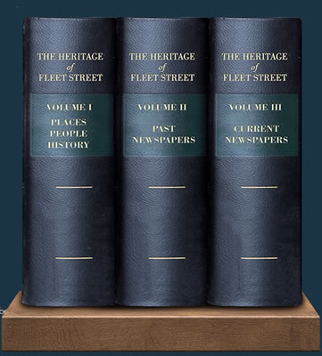

The Heritage
of Fleet Street
www.fleetstreetheritage.co.uk
www.fleetstreetheritage.co.uk
| The Fleet Street Heritage Project started with the opening of the Fleet Street Heritage sundial on the corner with Bouuverie Street in October 2021. Since then, we have developed the Fleet Street Heritage Project with the rest of our grant from the City of London Neighbourhood Fund. We have now completed our grant target of 70 information pages/webpages about many aspects of the heritage of Fleet Street, including some of the people, places and ideas which have contributed to its rich history, and also mini-biographies of many of the current and ancient newspapers printed here. |  |
The development of the Heritage Project and this website has been a team effort between our volunteer staff,
the Castle Baynard Ward Club, the Fleet Street Quarter,and the many other people who have written pages for us
. We would welcome your input |
|
SUCCESSFUL EXHIBITION AT OPEN HOUSE 2023 - see report
|
|
Volume 1 -
People, places, monuments, history and ideas
|
|
Pall Mall Gazette Daily Herald The Republican Daily Courant Morning Post Lloyd's Weekly |
News of the World Daily News Daily Chronicle News Chronicle Black Dwarf Punch New |
Reynolds Newspaper The Star Poor Mans Guardian Manchester Guardian Picture Post Childrens Newspaper New |
|||
|
Volume III - Biographies of current newspapers
|
|||||
|
The Telegraph Sunday Times The Times |
Sun Financial Times The Guardian New |
Daily Mail The Independent Reuters |
|||
|
____________________IN
PREPARATION____________________
|
|||||
|
Salisbury Square Whitefriaars Monastery |
Inner Temple A Compositor's Work Workers Dreadnought |
Daily Express Evening Standard |
|||
|
____________________FUTURE
PLANS____________________
|
|||||
|
Fleet Street Quarter Fleet Street in the 1700s Fleet Street in the 1800s Fleet Street in the 1900s Fleet Street in the 2020s |
120 - The Express Building 135 - The Telegraph Building Morning Chronicle Saturday Review Illustrated London News |
Daily Mirror Observer Morning Star Daily Worker Metro |
|||